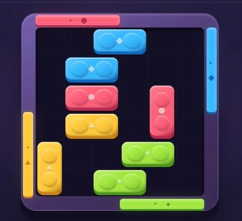
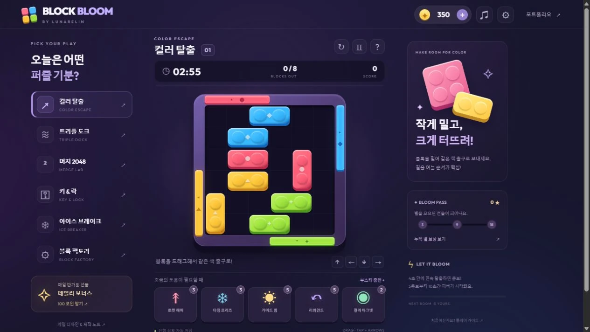
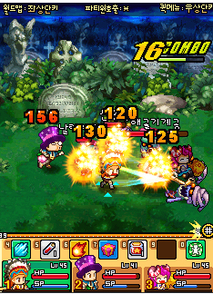
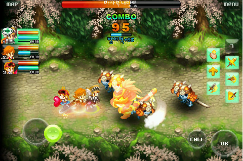
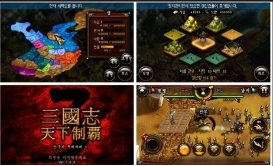
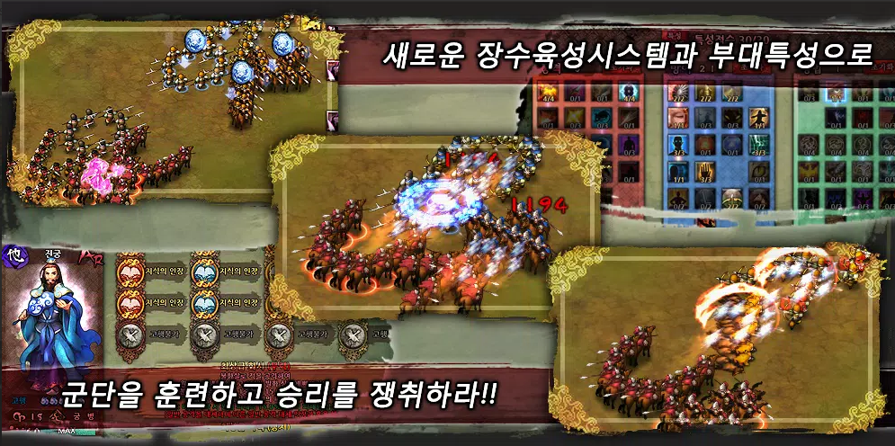
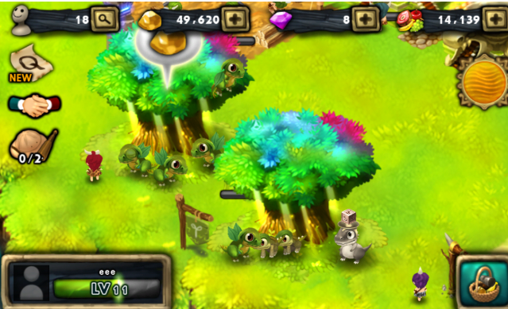

PLAYABLE PROTOTYPES
재미의 가설을
플레이로.
게임 클라이언트 개발자 정우용 · LunarElin입니다.
캐주얼 프로토타입을 직접 플레이하고, 설계 의도와 AI 협업·검증 과정을 살펴보세요.

BLOCK BLOOM한 판씩 배우는 퍼즐 기믹이번엔, 직접 플레이.
설치 없이 브라우저에서.
PC와 휴대폰으로 가볍게 즐겨보세요.
작은 아이디어도, 플레이할 수 있는 모습으로.
한 수의 만족감에서,
다음 한 판의 이유까지.
레퍼런스 분석, 코어 규칙, 보상 데모, AI 협업과 검증을 연결한 사례입니다.

초기 프로토타입 화면 · 사례 읽기같은 조작에, 다른 판단을.
색상 슬라이딩에 트리플·숫자 합성·열쇠·빙결·생성기 규칙을 결합했습니다. 부스터와 이어하기, 누적 보상은 재도전과 재방문의 이유를 살펴보기 위한 데모입니다.
- 기믹 도입·조합
- 12단계
- 즉시 사용 아이템
- 5종
제작 방향과 요구사항을 정하고, Codex가 구현·자동 검증을 수행한 기록을 정리했습니다. 실제 결제·광고와 사용자·UA 지표는 이 사례의 검증 범위에 포함하지 않습니다.
설계·AI 활용 과정오래 쌓은 경험.
계속되는 호기심.
피처폰에서 모바일, PC MMORPG까지.
기술과 플랫폼이 바뀌어도, 중심은 플레이어입니다.

함께 만드는 즐거움,
더 나은 경험을 향한 집요함.
게임은 제게 단순한 제품을 넘어, 유저와의 상호작용으로 세상을 더 재미있게 만드는 수단입니다. 17년 이상 서로 다른 기술과 플랫폼, 팀 환경을 경험하면서도 ‘유저에게 더 나은 경험을 제공하자’는 목표를 중심에 두고 일해 왔습니다.
현재는 파이드픽셀즈에서 일본 IP 기반 횡스크롤 액션 게임을 개발하고 있습니다. 2025년 9월 1일 합류해 영웅·몬스터 AI와 클라이언트 전투 로직, ATB 기반 턴제 결투장을 작업했습니다. 그랑사가 결투장과 유사한 규칙의 전투를 구현하며, 이전 프로젝트의 전투 개발 경험을 이어가고 있습니다.
슈퍼빌런랩스에서는 PC MMORPG ‘Ark’의 클라이언트 리더로 오픈월드 구조 설계, TCP/IP 기반 네트워크 구조 개발, 전투·이동 동기화, 빌드 환경 구축까지 전방위로 기여했습니다. 제한된 패킷 전송 조건에서도 수영과 점프, 절벽 낙하와 공중 콤보가 플레이어에게 자연스럽게 이어지도록 세밀하게 구현했습니다.
2025년에는 팀이 Unity 기반 ‘슈퍼빌런 원티드 2.0’ 업데이트에 투입되면서 처음으로 Unity·C# 프로젝트를 경험했습니다. 한 달 남짓한 기간 동안 2D 플랫포머 소셜 공간의 제3자 이동 동기화, 경로 탐색, 랭킹 최적화에 참여했습니다. 언리얼에서 쌓은 구조화와 동기화 경험을 바탕으로 새로운 환경을 이해하고 실제 기능으로 연결했습니다.
그 이전에는 엔픽셀의 ‘그랑사가’ 전투 파트에서 결투장과 캐릭터 변신 시스템, 네트워크 동기화 구조를 개발했습니다. 이후 같은 IP의 PC 프로젝트 ‘그랑사가: 언리미티드’를 리드하며 클라이언트 구조 전환과 CBT 준비, 팀 운영을 맡았습니다. 피처폰 게임부터 글로벌 모바일 서비스와 PC MMORPG까지 이어진 경험이 문제를 여러 관점에서 바라보는 바탕이 되었습니다.
팀을 이끌고 협업할 때의 기준은 열정, 진정성, 솔직함, 동료의식입니다. 모르는 것을 솔직하게 공유하고, 왜 이 일을 하는지 같은 맥락을 이해하며, 서로의 헌신을 존중하는 팀을 지향합니다. 좋은 기술이 좋은 게임으로 이어지려면, 함께 만드는 사람들의 신뢰가 먼저라고 생각합니다.
반복적이고 비효율적인 작업을 줄이는 데에는 AI를 적극적으로 활용합니다. 언리얼 API 기반 패킷 구조체 자동 생성과 리소스 정리 스크립트 등을 실무에 적용했습니다. 도구의 결과를 판단하고 검증할 수 있는 개발자의 안목을 바탕으로, 변화하는 환경에서도 효율적으로 적응하고 싶습니다.
유저가 몰입하고, 감동을 느끼고,
다음 플레이를 기대할 수 있도록.그 일을 여전히 설레는 마음으로 이어갑니다.
- 이름
- 정우용 · LunarElin
- 학력
- 인천전문대학 컴퓨터 정보과
- 병역
- 공군 병장 제대
2005.09–2008.12 - 엔진 · 언어
- Unreal Engine 4·5, Unity
C++, C#, WIPI-C - 개발 환경
- TCP/IP, SQLite
Git, SVN, Jenkins - 주요 경험
- 클라이언트 전투·AI, ATB 결투장, 이동 동기화·보간, RecastNav, 클라이언트 구조 설계, 팀 리딩, 빌드 자동화
SELECTED SCENES
만들어 온 게임의 장면들.
클라이언트 개발, 전투, 동기화.
실제 플레이 화면으로 만나는 개발 이력.
게임과 함께한 시간.
직접 맡았던 역할과 구현한 것들을 중심으로.
파이드픽셀즈
게임 클라이언트 개발
일본 IP 횡스크롤 액션
개발 중일본 IP 기반 횡스크롤 액션 게임의 클라이언트 전투를 개발하고 있습니다.
- 영웅·몬스터 AI 및 클라이언트 전투 로직 개발
- ATB(Active Time Battle) 기반 턴제 결투장 작업
- 그랑사가 결투장과 유사한 규칙의 전투 구현
슈퍼빌런랩스
MMO 클라이언트 리더
Ark
PC MMORPG · UE5오픈월드 심리스를 목표로 한 PC MMORPG. 초기 클라이언트 구조부터 팀 리딩, 빌드와 릴리즈까지 담당했습니다.
- TCP/IP 기반 클라이언트 구조 및 패킷 핸들링 프레임워크 구축
- 제한된 패킷 전송 조건에서 이동·수영·점프·절벽 낙하와 공중 콤보 동기화
- UE 5.3 → 5.4 → 5.5 적용, 빌드·작업 환경 구성 및 릴리즈 책임
개발 기간 · 2024.01–2025.06 / 이후 프로젝트 무기한 연기
슈퍼빌런 원티드 2.0 2025.07 · Unity
첫 Unity·C# 프로젝트로, 라이브 서비스 중인 게임의 2.0 업데이트에 참여했습니다.
- 2D 플랫포머 형태의 소셜 공간에서 제3자 이동 동기화 및 길 찾기
- 랭킹 최적화 작업
엔픽셀
GSU 클라이언트 파트장 · 그랑사가 전투 파트
그랑사가: 언리미티드 2022 하반기–2023.12 · PC
그랑사가 기반 PC MMORPG의 클라이언트 리더로, 모바일 기반 프로젝트의 PC 전환과 구조 변경을 진행했습니다.
- 엔진 담당 1명과 클라이언트 담당 6명으로 구성된 팀 리딩
- PC 전용 클라이언트 구조 전환과 CBT 준비·진행
CBT 진행 후 내부 사정으로 프로젝트 종료
그랑사가 2017.09–2022 상반기 · UE4
C++·Unreal Engine 4 기반 모바일 MMORPG의 전투 파트와 UI를 개발했습니다.
- 결투장 콘텐츠 UI/UX 및 인게임 개발
- 캐릭터 변신 시스템과 구조 담당
- 서버·클라이언트·엔진 사이의 제3자 이동 및 네트워크 동기화 구조 개발
넷마블 넥서스
세븐나이츠 글로벌 클라이언트 개발 · 파트장
세븐나이츠 글로벌 C++ · 자체 엔진
- 글로벌 서비스 TF 참여 및 태국 등 지역 서비스 준비
- 글로벌 전용 타르타로스 콘텐츠 및 UI/UX 개발
- 글로벌 규칙에 따른 전투 로직 작업과 버그 수정
- 2017년 4월경부터 글로벌 클라이언트 파트장 담당
마이모인스
피처폰·초기 스마트폰 게임 클라이언트 개발
작은 팀에서 만든 게임들 WIPI-C · Android · iOS
개발자·기획자·아트 각 1명으로 구성된 팀에서 프로젝트당 6개월~1년 단위의 패키지 게임을 개발했습니다.
- 통신 3사 WIPI-C 게임 제작 및 초기 Android·iOS 게임 개발·디버깅
- 엘리오스의 전설 1·2 — 3인 파티 스위칭 횡스크롤 액션
- 삼국지 천하제패 3·5 — 전략·액션 전투와 서버 전투 로그 기반 연출
- 드래곤 파라다이스 — 드래곤 SNG
TECHNICAL EXPERIENCE
패킷 사이의 움직임을 연결하는 일.
초당 제한된 횟수로 수신하는 서버 이동 패킷을 바탕으로 제3자 캐릭터를 동기화했습니다. 수신 상태 사이를 보간하고 클라이언트에서 이동·점프를 시뮬레이션해 화면의 움직임을 이어 주는 작업입니다.
- 수신서버 이동 상태
제한된 횟수로 수신하는 이동 패킷을 기준으로 상태 갱신
- 계산이동·점프 시뮬레이션
프레임 시간과 충돌면을 고려해 이동·점프 처리
- 표현보간과 스무딩
수신 상태 사이의 위치를 연결하고 시각적 움직임 보정
- 이동 보간 · 네트워크 스무딩
- Interpolation · Network Smoothing. 수신한 이동 상태 사이를 부드럽게 연결하는 처리로, 이동·수영·점프·낙하와 공중 콤보의 동기화 경험을 갖고 있습니다.
- 클라이언트 이동·점프 시뮬레이션
- 프레임 시간을 반영한 이동 계산, 충돌면을 고려한 방향 보정, 중력과 목표 높이를 바탕으로 한 점프 시뮬레이션을 다뤘습니다.
- RecastNav · NavMesh
- 이동 가능한 영역을 표현하는 내비게이션 메시와 경로 탐색 작업에 RecastNav를 활용했습니다. 네트워크 동기화와 구분되는 내비게이션 기술입니다.
EARLY WORKS · 2008–2014
작은 화면에서 시작한 이야기.
엘리오스의 전설부터 드래곤 파라다이스까지.
직접 개발에 참여했던 게임의 실제 화면입니다.




좋은 게임은,
함께 만듭니다.
열정 · 진정성 · 솔직함 · 동료의식
먼저, 맥락을 공유합니다.
목표와 비전, 지금 이 일을 하는 배경, 일정과 기술의 제약, 성공을 판단할 기준. 같은 맥락을 이해한 상태에서 함께 답을 찾습니다.
반복은 도구에, 판단은 개발자에게.
언리얼 API에 맞춘 패킷 구조체 자동 생성과 리소스 정리 스크립트에 AI를 활용했습니다. 도구가 만든 결과를 이해하고 검증하는 기술적 안목을 중요하게 생각합니다.
KEEP MAKING. KEEP PLAYING.